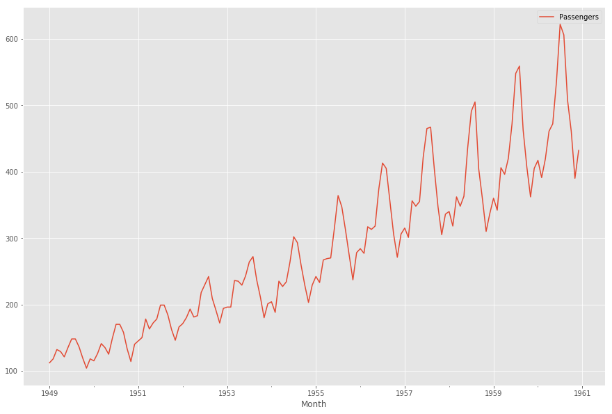
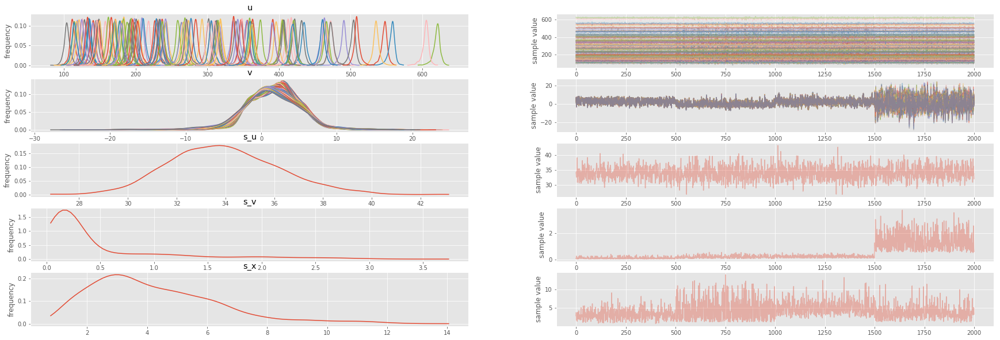
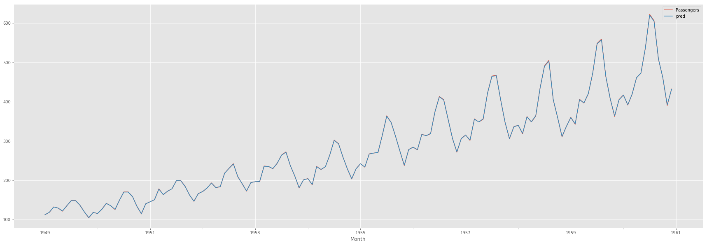
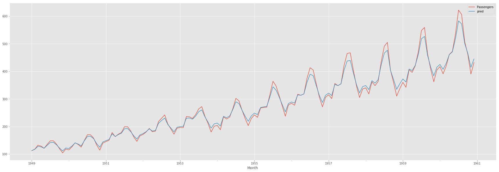
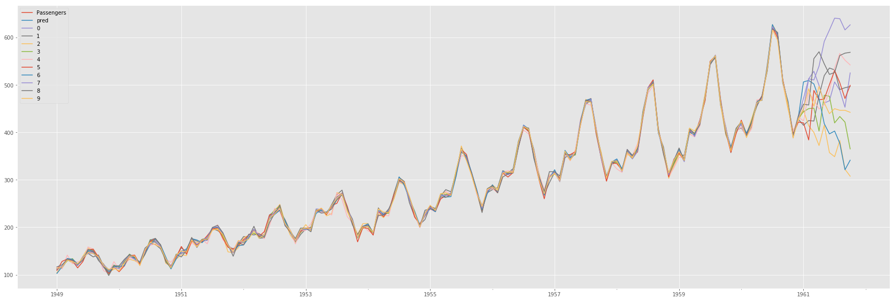
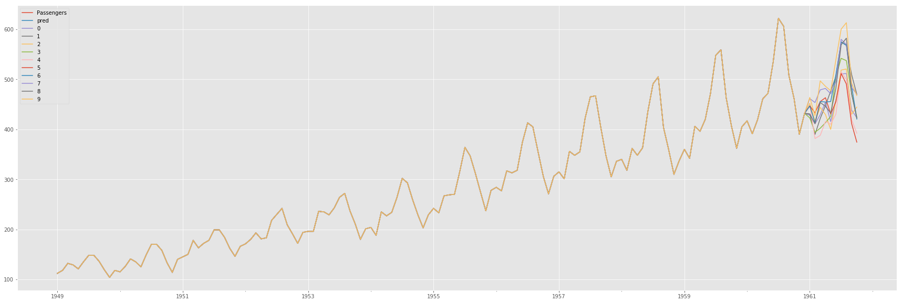
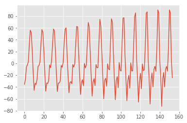

Local Linear Models for Time Series
Local Linear Trend models are one of the simplest time series models, and can be expressed by the following equations:
\[ v_{t+1} \sim N\left(v_t, \sigma_v^2\right) \]
\[ x_t \sim N\left(x_{t-1} + v_{t-1}, \sigma_x^2\right) \]
\[ y_t \sim N\left(x_t, \sigma_y^2\right) \]
Where $\sigma_x^2$ is the observation error, $\sigma_y^2$ is the level disturbance, and $\sigma_v^2$ is the slope distrubance
We will model this in pystan, using the air passengers dataset.
import pystan
import matplotlib as mpl
import matplotlib.pyplot as plt
import numpy as np
import pandas as pd
plt.style.use('ggplot')
%matplotlib inline
passengers = pd.read_csv('passengers.csv', header=0, sep=';')
passengers['Month'] = pd.to_datetime(passengers['Month'])
passengers.set_index('Month', inplace=True)
passengers.plot(figsize=(15, 10))
<matplotlib.axes._subplots.AxesSubplot at 0x1a1eb1f828>

In stan we can write out model as follows:
stan_code = """data {
int N;
vector[N] X;
}
parameters {
vector[N] u;
vector[N] v;
real<lower=0> s_u;
real<lower=0> s_v;
real<lower=0> s_x;
}
model {
v[2:N] ~ normal(v[1:N-1], s_v);
u[2:N] ~ normal(u[1:N-1] + v[1:N-1], s_u);
X ~ normal(u, s_x);
}"""
data_feed = {'X': passengers['Passengers'].values, 'N': passengers.shape[0]}
sm = pystan.StanModel(model_code=stan_code)
fit = sm.sampling(data=data_feed, iter=1000)
INFO:pystan:COMPILING THE C++ CODE FOR MODEL anon_model_ae1b8f06975ee0f66c2a6bd10f156f5b NOW.
We can visually check the fit and the parameters with:
with mpl.rc_context():
mpl.rc('figure', figsize=(30, 10))
fit.plot()

And we can also check the in sample fit visually:
samples = fit.extract(permuted=True)
u_mean = samples['u'].mean(axis=0)
passengers['pred'] = u_mean
passengers.plot(figsize=(30, 10))
<matplotlib.axes._subplots.AxesSubplot at 0x1a1ff665c0>

To predict future points, we have to include the extra points in the original stan code
stan_code = """data {
int N;
vector[N] X;
int pred_num;
}
parameters {
vector[N] u;
vector[N] v;
real<lower=0> s_u;
real<lower=0> s_v;
real<lower=0> s_x;
}
model {
v[2:N] ~ normal(v[1:N-1], s_v);
u[2:N] ~ normal(u[1:N-1] + v[1:N-1], s_u);
X ~ normal(u, s_x);
}
generated quantities {
vector[N + pred_num] u_pred;
vector[pred_num] x_pred;
u_pred[1:N] = u;
for (i in 1:pred_num) {
u_pred[N+i] = normal_rng(u_pred[N+i-1], s_u);
x_pred[i] = normal_rng(u_pred[N+i], s_x);
}
}
"""
data_feed = {'X': passengers['Passengers'].values, 'N': passengers.shape[0], 'pred_num':10}
sm = pystan.StanModel(model_code=stan_code)
fit = sm.sampling(data=data_feed, iter=1000)
INFO:pystan:COMPILING THE C++ CODE FOR MODEL anon_model_cc645429411ff4903a697d8562e07c6d NOW.
samples = fit.extract(permuted=True)
u_mean = samples['u'].mean(axis=0)
u_pred = samples['u_pred'][:]
pred_df = pd.DataFrame(data=u_pred).T
passengers['pred'] = u_mean
passengers.plot(figsize=(30, 10))
<matplotlib.axes._subplots.AxesSubplot at 0x1a204ff0b8>

index = pd.date_range('1961-01', periods=10, freq='MS')
df_ = pd.DataFrame(index=passengers.index.append(index), columns=passengers.columns)
df_['Passengers'] = passengers['Passengers']
pred_df.set_index(passengers.index.append(index), inplace=True)
df_ = pd.concat([df_, pred_df], axis=1)
df_[['Passengers', 'pred', 0, 1, 2, 3, 4, 5, 6, 7, 8, 9]].plot(figsize=(30, 10))
<matplotlib.axes._subplots.AxesSubplot at 0x1a1f9f33c8>

So, even though our model has a good in-sample fit, the out of sample predictions are very poor. To solve this, we can add a seasonal component:
\[ u_t \sim N\left(u_{t-1}, \sigma_v^2\right) \]
\[ s_t \sim N\left(-\sum^n_{l=1}s_{t-l}, \sigma_s\right) \]
\[ y_t \sim N\left(u_t + s_t, \sigma_y^2\right) \]
stan_code = """data {
int N;
int pred_num;
vector[N] y;
}
parameters {
vector[N] s;
vector[N] u;
real<lower=0> s_s;
real<lower=0> s_u;
real<lower=0> s_y;
}
model {
s[12:N] ~ normal(-s[1:N-11]-s[2:N-10]-s[3:N-9]-s[4:N-8]-s[5:N-7]-s[6:N-6]-s[7:N-5]-s[8:N-4]-s[9:N-3]-s[10:N-2]-s[11:N-1], s_s);
u[2:N] ~ normal(u[1:N-1], s_u);
y ~ normal(u+s, s_y);
}
generated quantities {
vector[N+pred_num] s_pred;
vector[N+pred_num] u_pred;
vector[N+pred_num] y_pred;
s_pred[1:N] = s;
u_pred[1:N] = u;
y_pred[1:N] = y;
for (t in (N+1):(N+pred_num)){
s_pred[t] = normal_rng(-s_pred[t-11]-s_pred[t-10]-s_pred[t-9]-s_pred[t-8]-s_pred[t-7]-s_pred[t-6]-s_pred[t-5]-s_pred[t-4]-s_pred[t-3]-s_pred[t-2]-s_pred[t-1], s_s);
u_pred[t] = normal_rng(u_pred[t-1], s_u);
y_pred[t] = normal_rng(u_pred[t]+s_pred[t], s_y);
}
}
"""
data_feed = {'y': passengers['Passengers'].values, 'N': passengers.shape[0], 'pred_num':10}
sm = pystan.StanModel(model_code=stan_code)
fit = sm.sampling(data=data_feed, iter=1000)
INFO:pystan:COMPILING THE C++ CODE FOR MODEL anon_model_65ffdf38c841c93de59a3d4d247dc640 NOW.
samples = fit.extract(permuted=True)
u_mean = samples['u'].mean(axis=0)
u_pred = samples['y_pred'][:]
pred_df = pd.DataFrame(data=u_pred).T
df_ = pd.DataFrame(index=passengers.index.append(index), columns=passengers.columns)
df_['Passengers'] = passengers['Passengers']
pred_df.set_index(passengers.index.append(index), inplace=True)
df_ = pd.concat([df_, pred_df], axis=1)
df_[['Passengers', 'pred', 0, 1, 2, 3, 4, 5, 6, 7, 8, 9]].plot(figsize=(30, 10))
<matplotlib.axes._subplots.AxesSubplot at 0x1a2118a278>

s_pred = samples['s_pred'].mean(axis=0)
plt.plot(list(range(0, s_pred.shape[0])), s_pred)
[<matplotlib.lines.Line2D at 0x1a25972710>]

These out of sample predicitons look much better!